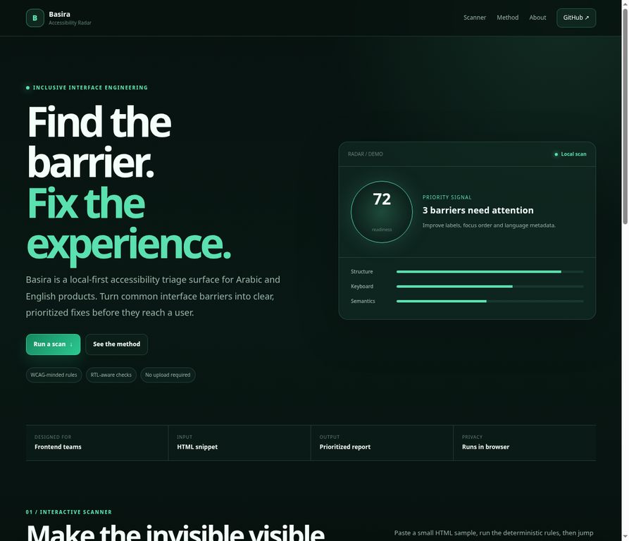
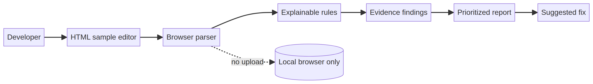

Primary user
Frontend developers and product teams who need a fast first pass before a formal audit or disabled-user testing.
Basira is a local-first accessibility triage surface for Arabic and English interfaces. It helps a frontend team see common barriers, understand why they matter, and choose the next fix without pretending to be a compliance certificate.

Accessibility defects often enter the workflow as vague late-stage feedback. A small team may know that a page feels difficult to use, but lack a fast way to connect the barrier to an element, a reason, and a fix. Arabic and bilingual pages add language and direction metadata to the review surface.
Frontend developers and product teams who need a fast first pass before a formal audit or disabled-user testing.
A small explainable ruleset is more useful than a large opaque score when the next action matters.
| Capability | Implementation | Why it matters |
|---|---|---|
| Local scan | DOMParser in the browser | Sample HTML stays in the user’s session. |
| Rules | Language, direction, headings, alt, labels, links, icon names | Every signal is visible and explainable. |
| Report | Severity, evidence, recommended fix | Turns a detection into a team conversation. |
| Accessibility of the tool | Visible focus, labelled controls, reduced-motion support | The review tool should model the quality it asks for. |
The MVP keeps the data path deliberately small: HTML sample, local parser, explicit rules, then evidence-linked findings. The editable source remains in the repository and the rendered diagram is included for fast review.

The default sample intentionally contains an icon-only button, missing language metadata, an unlabeled input, and vague link text. In local browser testing, the report rendered **6 findings: 3 critical, 1 warning, and 2 passed rules**. These are test observations from the sample, not customer metrics.
Boundary: Basira is an early triage showcase. It does not prove conformance, replace an audit, or represent production customer results.